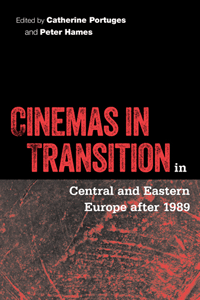

An examination of Eastern European cinema a generation after the end of the Cold War
An examination of Eastern European cinema a generation after the end of the Cold War


 An examination of Eastern European cinema a generation after the end of the Cold War
An examination of Eastern European cinema a generation after the end of the Cold War

|  |
Cinemas in Transition in Central and Eastern Europe after 1989edited by Catherine Portuges and Peter Hamescloth EAN: 978-1-59213-265-2 (ISBN: 1-59213-265-0) |
"Cinemas in Transition in Central and Eastern Europe after 1989 brings together a highly qualified group of experts who synthesize a wide range of data and arguments. Portuges and Hames provide a clear, convincing Introduction, and they gather materials that allow both a broader regional approach and a profound comparative view of the politics of culture in the post-Socialist twenty-first century. Cinemas in Transition in Central and Eastern Europe after 1989 fills a conspicuous gap in the film studies discipline."
—Jerry W. Carlson, Professor of Critical Studies and Film at The City College and Graduate Center, CUNY
The cinemas of Eastern and Central Europe have been moving away from earlier Cold War perspectives and iconographies toward identifications more closely linked to a redefined Europe. Cinemas in Transition in Central and Eastern Europe after 1989 studies the shifts in the dynamics between film production, exhibition, and reception in Eastern bloc countries as they moved from state-sponsored systems toward the free market.
The contributors and editors of this exciting volume examine the interrelations between thematic, aesthetic, and infrastructural changes; the globalization of the international cinema marketplace; and the problems and promises arising from the privatization of national cinemas.
Cinemas in Transition in Central and Eastern Europe after 1989 also addresses the strategies employed for preserving national cinemas and cultures through an analysis of films from the Czech and Slovak republics, the former German Democratic Republic, Hungary, Poland, Romania, Ukraine, and the former Yugoslavia. The study provides a picture of Eastern European cinema at a critical juncture as well as its connections to the emergent world of transnational media.
Contributors include Barton Byg, Sanda Foamente, Andrew Horton, Dina Iordanova, Ewa Mazierska, Bohdan Y. Nebesio, Bogdan Stefanescu, and the editors.
Excerpt available at www.temple.edu/tempress
"A timely and important contribution to cinema studies, European studies, the study of democratic transitions, and post-Communist studies. The quality of the work in Cinemas in Transition in Central and Eastern Europe after 1989, reinforced by the reputation of the editors, enhances this interesting and fresh look at the world, which has undergone enormous transformation since the end of the Cold War."
—Aida A. Hozic, Associate Professor of International Relations, University of Florida
"[A]n excellent collection of essays dealing with contemporary films of the Czech Republic, Bulgaria, Hungary, Poland, the former East Germany, Romania, Ukraine, and Yugoslavia. Most of the films discussed are relatively unknown in the West, which is what makes the book so important; the book is also an excellent one-stop source for courses on recent eastern European cinema.... [T]his book would be of immeasurable value to anyone working in the areas of eastern European cinema, the globalization of the international cinema marketplace, and the problems and promises arising from the privatization of national cinemas. Summing Up: Highly recommended."
—Choice
"This collection provides a much-needed comparative overview of recent developments in national cinemas in Central and Eastern Europe.... [The] volume, which features some of the most notable scholars working on the cinemas of the region, strikes an effective balance between analyzing recent trends within the respective film industries and discussing film-makers and films. It usefully highlights important film-makers who may have otherwise slipped below the radar of the international film scene....[A]n excellent volume. It will prove an indispensable reference for anyone studying the cinemas of the region."
—Historical Journal of Film, Radio, and Television
"This is a highly successful and welcome volume that brings together much information and insight.... Individual chapters efficiently balance an often thriller-like historical narrative, built from dense but well-organized information with plenty of names and events inviting further research, on one hand, with a more elaborate, in-depth interpretation and contextualization of select films and directors, on the other.... All of the chapters have much to recommend them, not least because each one creates its own set of major categories that best capture its own cinema.... In all, Cinemas in Transition is an excellent book full of energy and, at times, a welcome passion. It will be an extremely useful textbook for those of us teaching central and eastern European or world film. A fine read for both scholarly and general audiences, with real insight but no potentially alienating jargon, this book is here to stay. I will return to it often for an insider's look into the fascinating cinemas in transition coming from the (still?) 'lands in-between.'"
—Slavic Review
"Cinemas in Transition contains eight accessible and well-written surveys of the industrial and artistic trends in cinemas around the fall of communism across Central and Eastern Europe.... [T]he volume should provide an invaluable textbook for undergraduate courses on Eastern European cinemas, world cinema enthusiasts and also scholars looking to broaden their awareness beyond the individual cultures and industries that may comprise their specialist area of interest."
—Studies in Eastern European Cinema
"The book provides detailed information on a wide spectrum of film-related institutions, from funding arrangements to film festivals and the state of local cinema facilities.... [A]dmirable space is given to animation, documentary and experimental filmmaking, areas where significant work is being produced.... [T]he ideas offered here do justice to the impressive depth and extent of the factual material. This collection of densely researched, well-analysed studies offers a richly informative insight into a specific region that will be unfamiliar to many and also has much to contribute to broader discussions around globalization, film funding, the challenges facing small cinemas and the articulation of national and regional identity."
—Slavonic and East European Review
"[T]he collection is pioneering in its attempt to offer a comparative overview of the region�s landscape of film production in the post-1989 era. Moreover, the scope of the volume is as admirable as it is wide ranging.... Cinemas in Transition definitely makes a valuable read for those who seek to learn more about Central Europe and its more recent film production and film history."
—Hungarian Cultural Studies
"Among the many books related to transition in Eastern Europe, this volume...is a welcome addition. It stands out as a contribution to the growing number of texts on post-1989 cultural universals in the Eastern and Central European post-Communist space. The contributors skillfully examine how changes from centralized to market economy have affected the film industries and cinematic output..... The essays in this text offer an encyclopedic exploration of film production...and each text presents specificities of the film industries and the changes that took place during the 'transition' of each country.... Cinemas in Transition is a text that can be appreciated by scholar and enthusiast alike."
—Slavic and East European Journal
"This edited collection contains eight essays that focus on films produced during the transition from Communism to post-Communism in eight East-European countries....The Introduction, co-written by Peter Hames and Catherine Portuges, highlights the common situation facing each of these countries in terms of film production and national identity, while confronted with similar changes because of the ending of state control over projects, mutations in censorship, the privatization of the production industries, and the collapse of the traditional networks of film distribution.... The subsequent case studies offer much more than an enumeration of film titles that are often unknown to non-European filmgoers; they offer an analysis of the main themes and preoccupations during this era of transition after 1989."
—Forum for Modern Language Studies
Acknowledgments
Introduction • Peter Hames and Catherine Portuges
1. Bulgarian Cinema: Optimism in Moderation • Dina Iordanova
2. The Czech and Slovak Republics: The Velvet Revolution and After • Peter Hames
3. Is There Still an East German Cinema? • Barton Byg
4. Memory and Reinvention in Post-Socialist Hungarian Cinema • Catherine Portuges
5. Searching for Survival and Meaning: Polish Film after 1989 • Ewa Mazierska
6. Narratives of the Emerging Self: Romania's First Years of Post-totalitarian Cinema • Bogdan Stefanescu and Sanda Foamete
7. The First Five Years with No Plan: Building National Cinema in Ukraine, 1992-1997 • Bohdan Y. Nebesio
8. Cinema Haunts My Memory: Filmmaking in the Former Yugoslavia • Andrew Horton
Contributors
Index
Catherine Portuges is Director of the Interdepartmental Program in Film Studies, Professor of Comparative Literature, and Curator of the Massachusetts Multicultural Film Festival at the University of Massachusetts Amherst. She is the author of Screen Memories: The Hungarian Cinema of Márta Mészáros.
Peter Hames is Visiting Professor in Film Studies in the Faculty of Arts and Creative Technology at Staffordshire University and a program adviser to the London Film Festival. He is the author of Czech and Slovak Cinema: Theme and Tradition and The Czechoslovak New Wave and editor of The Cinema of Central Europe and The Cinema of Jan �vankmajer: Dark Alchemy.
Cinema Studies
Cultural Studies
History
© 2016 Temple University. All Rights Reserved. This page: http://www.temple.edu/tempress/titles/1747_reg.html.